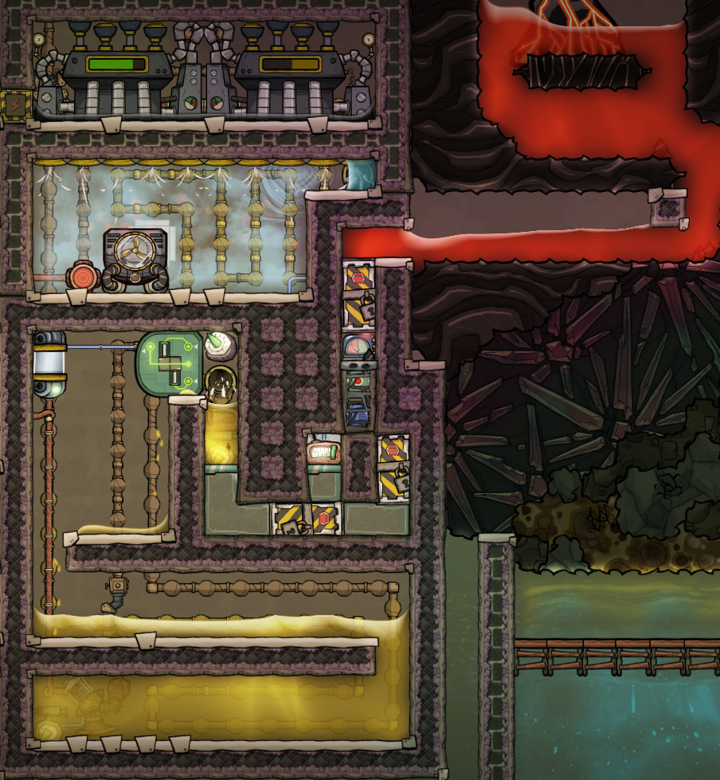
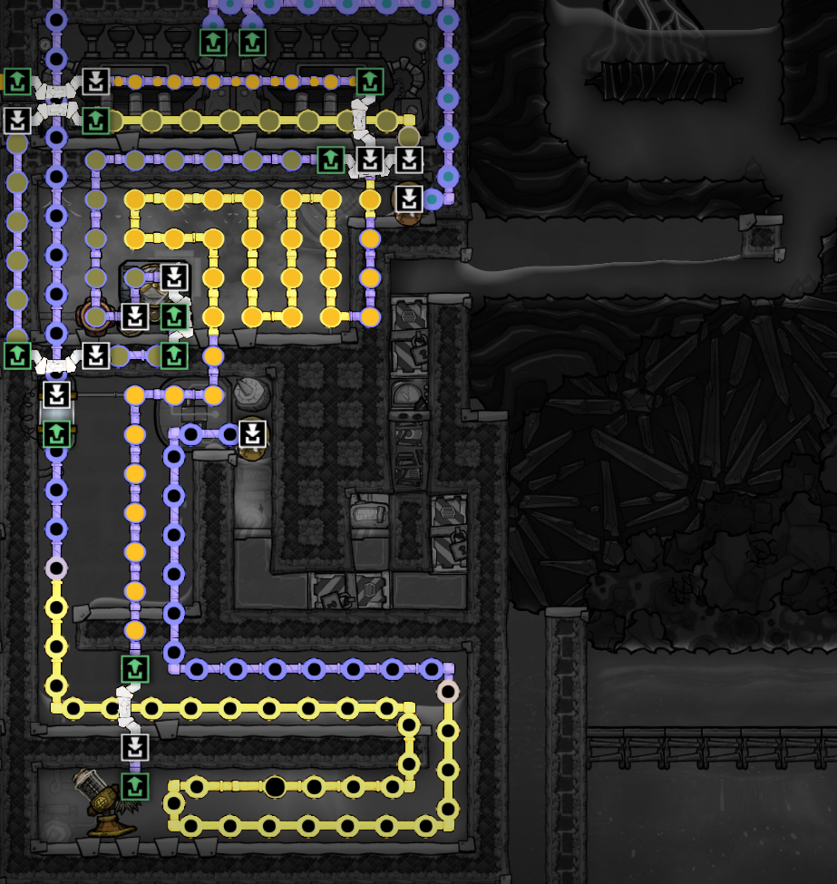
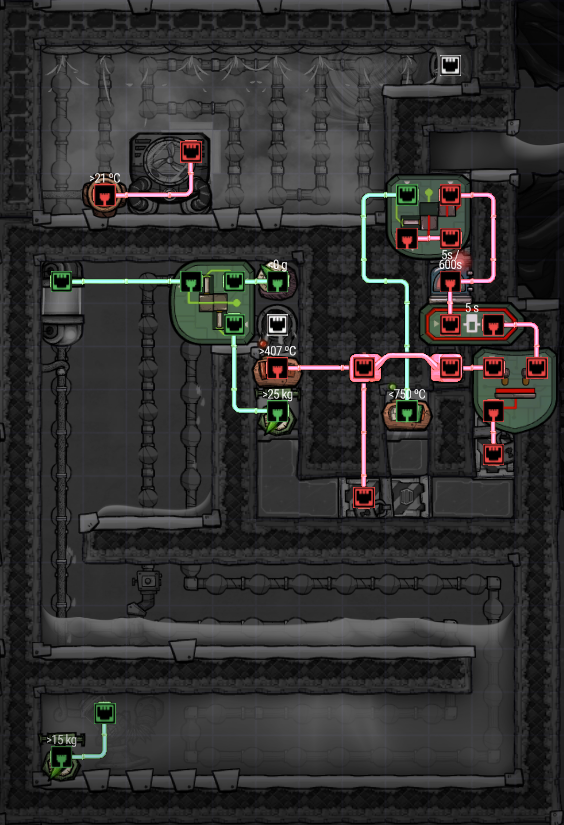

Oxygen Not Included is my all time favorite game. This is just a collection of builds and other stuff.
Whenever I build something, from a complex build like a sour gas boiler to something simple like plotting down a natural gas generator, there are lots of things to consider.
Does the build generate heat? Consider both in the short and long term
Below are various builds and other cool resources. Generally in order of most favorite.
I designed my own petroleum boiler. The petroleum boiler part is taken from Heart of a Petroleum Boiler, and then I exploit that small amounts of magma will solidify into debris in a mesh tile and spew out diagonally. I ends up in the mechanized airlock that when closed will transfer heat, and when open it is a vacuum and does not transfer heat. This is essentially how I manage the heat injection into the small petroleum pocket.
I use a small portion of the classical petroleum boiler to preheat the crude oil, and cool down the petroleum so that the liquid pump does not overheat.
To extract residual heat I use a normal steam chamber. Notice that the petroleum pipe exits at the coldest spot, next to the steam turbine exhaust.

Piping:

Automation:
